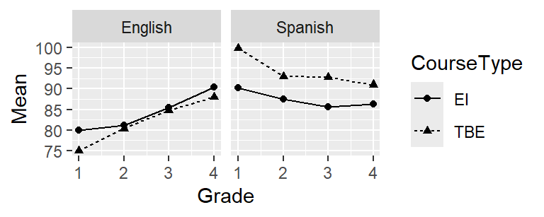
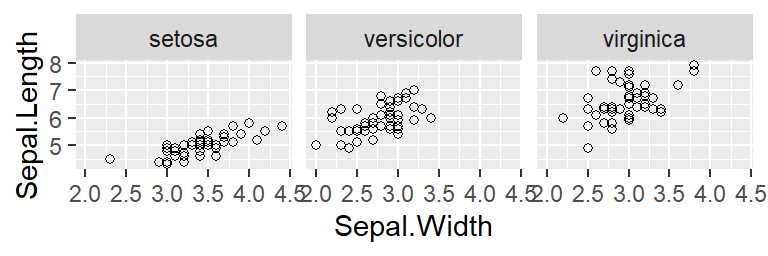
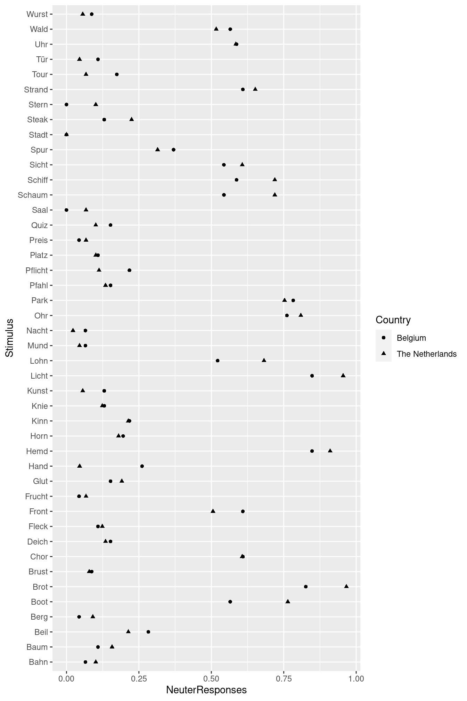
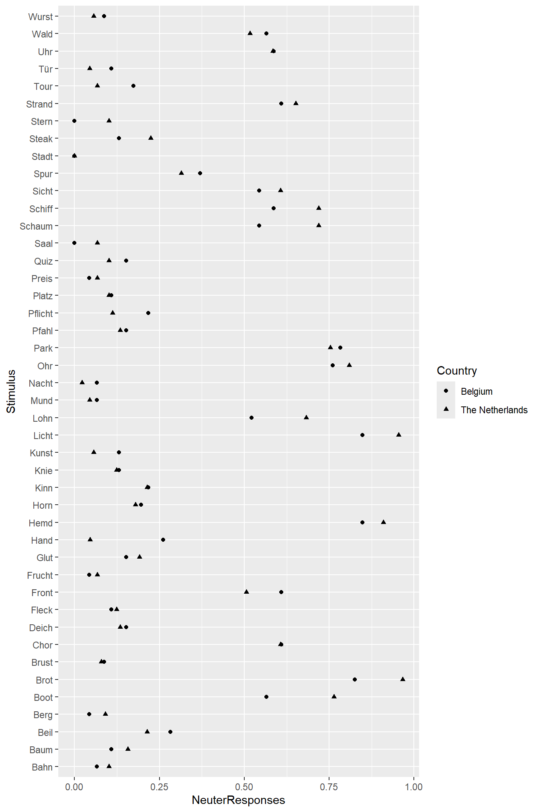
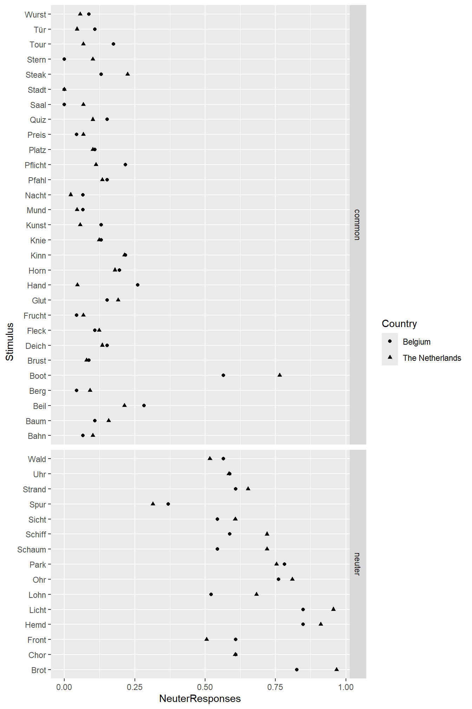
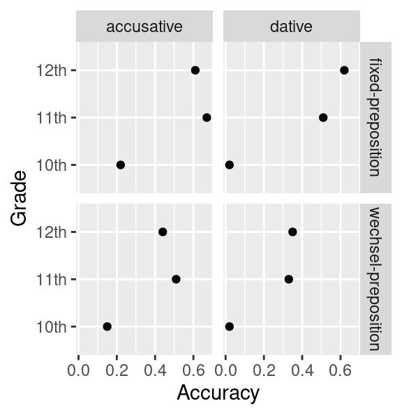

Chapter 6 Week 6: Dotplots
6.1 Goals
- You’ll learn how to draw simple dotcharts…
- and why they’re better than pie charts.
- You’ll gain some experience in debugging R code with typos :)
6.2 Pie charts, bar charts, and dotplots
The three graphs below all show the same data (the proportion of sales of a pie producer by pie taste).3

The graph on the left is a traditional pie chart. Though common, this type of graph has serious shortcomings, for which reason it should rarely be used:
Pie charts aren’t very flexible: When the number of categories is larger than here, pie charts are hardly comprehensible. It’s also difficult to add additional information to pie charts (e.g., the proportion of sales by taste the year before; see below).
Readers gauge the numbers (in this case: the proportions) that the pie chart represents less accurately than when they’re presented in a bar chart or in a dot plot (Cleveland & McGill 1984).
The graph in the middle is a bar chart, the one of the right a dot plot. Both are better choices than pie charts. For one things, they’re more flexible. For instance, you can add the sales from the year before to both graphs—as separate bars or by using different symbols. This would be difficult to accomplish in a pie chart:

I prefer dot plots because it’s easier to visualise a large number of categories and I find them less ‘busy’.
Tip: If you prefer bar charts: It’s usually better to plot the bars next to each other rather than to stack them on top of each other.
Tip: Don’t use pie charts.
Incidentally, if you enter the following command in R,
the help page for the pie() function opens.
Then scroll down to the section Note.
6.3 Tutorial
We’ll use data from Vanhove (2017) (see Moodle). For this study, I recruited 175 native speakers of Dutch from Belgium and the Netherlands. I showed them 44 German words with Dutch cognates (e.g., Stadt (NL stad) or Schiff (NL schip)) and asked them to choose their gender-marked definitive article (der (masculine), die (feminine), das (neuter)). Dutch and German are closely related languages, but there are a number of cognates whose grammatical gender differs between both languages. The Dutch word strand `beach’, for instance, is neuter, whereas the German word Strand is masculine. One of the research questions was if Belgian and Dutch participants were more likely to choose the neuter article das if the German word’s Dutch cognate is neuter than when it has common gender.4
Read in this dataset in R.
## Parsed with column specification:
## cols(
## Stimulus = col_character(),
## Country = col_character(),
## NeuterResponses = col_double(),
## DutchCognate = col_character(),
## GermanGender = col_character(),
## DutchGender = col_character()
## )The first few rows should look as follows:
## # A tibble: 6 x 6
## Stimulus Country NeuterResponses DutchCognate GermanGender DutchGender
## <chr> <chr> <dbl> <chr> <chr> <chr>
## 1 Stadt Belgium 0 stad feminine common
## 2 Stadt The Netherlands 0 stad feminine common
## 3 Saal Belgium 0 zaal masculine common
## 4 Saal The Netherlands 0.0674 zaal masculine common
## 5 Nacht Belgium 0.0652 nacht feminine common
## 6 Nacht The Netherlands 0.0225 nacht feminine commonThe column NeuterResponses contains the proportion of neuter article
(das)
choices per German word (Stimulus) per (Country).
The column GermanGender contains the word’s correct gender (in German);
the column DutchGender contains the grammatical gender of the word’s Dutch cognate.
6.3.1 A first attempt
We can plot the proportion of das choices per word separately per country (Belgium vs. the Netherlands). This will show us how strongly the response pattern varies per word and whether Belgian and Dutch speakers of Dutch show different preferences. The code and comments show how to build this dot plot:
Tip: You’ll learn more by typing in these commands yourself and adding your own comments than by copy-pasting them. For this reason, I added a couple of typos and left out a couple of commas and brackets – all for you to find and fix, enjoy!
ggplot(dat, # Data set
aes(x = NeuteResponses, # Proportions along x axis
y = Stimulus, # Stimulus names along y axis
shape = Country)) + # Different symbols by country
geom_point() # Plot as points
6.3.2 Highlight differences between different categories of stimuli
The plot above doesn’t offer an answer to the research question
since the difference between stimuli with different Dutch genders
isn’t highlighted.
To accomplish this, we can plot stimuli with neuter cognates and
those with common-gender cognates in different boxes (facetting,
see the tutorial on line charts).
(To see what scales = "free_y" and space = "free_y" accomplish,
leave these parameters out of the call, i.e., using just facet_grid(DutchGender ~.).)
ggplot(dat,
aes(x = NeuterResponses,
y = Stimulus
shape = Country)) +
geom_point() +
facet_grid(DutchGender ~ ., # split up vertically by Dutch gender
scales = "free_y",
space = "free_y")
This graph shows pretty clearly that both Belgian and Dutch speakers of Dutch pick das more often if the German word has a neuter-gender cognate than when it has a common-gender cognate: The points in the lower box lie more to the right than those in the upper box. With a single exception (Boot), there is no overlap between these two distributions.
Additionally, the responses of Belgian and Dutch participants don’t seem to vary much from one another. (For instance, we don’t observe that most triangles lie to the right of the circles or that Belgian participants prefer das for Wurst and Dutch participants don’t.)
6.3.3 A final attempt
The previous graph is good enough. But we can do better still. German is taught in school in both Flanders and the Netherlands, and at least some participants will have known which words are neuter in German and which aren’t. So some of the variation between the stimuli will be attributable to the stimuli’s German gender. To highlight this, we can split up the graph not only by the words’ Dutch gender, but also by their German gender. And we still have to label the axes!
ggplot(dat,
aes(x = NeuterResponses,
y = Stimulus,
shape = Country)) +
geom_point()
facet_grid(DutchGender + GermanGender ~ ., # split up by Dutch and German gender
scales = "free_y", space = "free_y") +
xlab("Proportion 'das'") + # axis label for x
ylab("") # the y axis is self-explanatory
The upper three boxes show feminine, masculine and neuter German words with common-gender cognates; the lower three boxes show feminine, masculine and neuter German words with neuter-gender cognates. The graph shows that the factor Dutch gender is the most important determinant of the participants’ article choices. But the factor German gender also plays a role: When a German word is neuter, both Belgian and Dutch people choose das more often than when it’s feminine or masculine.
6.3.4 Optional: Possible improvements and further information
- Now the words are sorted alphabetically in each box. But this order can be customised.
- The symbols used in the graph above are difficult to distinguish optically. They, too, can be changed.
If you’re interested in these possibilities, please refer to https://janhove.github.io/reporting/2016/08/30/drawing-a-dotplot.
The versatility and usefulness of dotplots in linguistics is highlighted by Sönning (2016). Another useful introduction is Jacoby (2006).
I don’t expect you to carry out these additional steps. But perhaps they’re useful to you in the future.
6.4 For other kinds of data
In the tutorial above, we worked with proportions. But you can use dot plots for other types of data, too. See http://perceptualedge.com/articles/b-eye/dot_plots.pdf for some examples.
6.5 Exercise
Baten (2011) was interested in the acquisition of the German case system
by Flemish pupils. He reported his results in elaborate tables;
we’ll focus on the accuracy data for accusative and dative pronouns
(e.g., dich vs. dir) that occur after prepositions.
I tabulated the results in ErgebniseBaten2011.csv (Moodle).
This data set contains 4 columns:
Grade: Baten’s participants were pupils from 10th, 11th and 12th grade.TargetCase: The correct form was either an accusative or a dative pronoun.Position: Some pronouns occurred after a preposition that is either always followed by an accusative (e.g., bis) or always followed by a dative (e.g., nach); these are marked asfixed-preposition. Other pronouns occurred after a preposition that could be followed by both an accusative or a dative, depending on its meaning (e.g., in and auf;wechsel-preposition).
Below you’ll find two graphs. Both highlight that there’s a huge leap in accuracy between 10th and 11th grade. Moreover, accuracy is higher for the ‘fixed’ prepositions than for the ‘Wechselpräpositionen’. (This is slightly clearer in the second graph, I think.)

Your task: Draw both graphs yourself. Hand in the compiled HTML report.
References
Baten, Kristof. 2011. Processability Theory and German case acquisition. Language Learning 61. 455–505.
Cleveland, William S. & Robert McGill. 1984. Graphical perception: Theory, experimentation, and application to the development of graphical methods. Journal of the American Statistical Association 79. 531–554.
Jacoby, William G. 2006. The dot plot: A graphical display for labeled quantitative values. The Political Methodologist 14(1). 6–14.
Sönning, Lukas. 2016. The dot plot: A graphical tool for data analysis and presentation. In Hanna Christ, Daniel Klenovšak, Lukas Sönning & Valentin Werner (eds.), A blend of MaLT: Selected contributions from the Methods and Linguistic Theories Symposium 2015, 101–129. Bamberg, Germany: University of Bamberg Press. doi:10.20378/irbo-51101.
Vanhove, Jan. 2017. The influence of standard and substandard Dutch on gender assignment in second language German. Language Learning 67(2). 431–460. doi:10.1111/lang.12230.